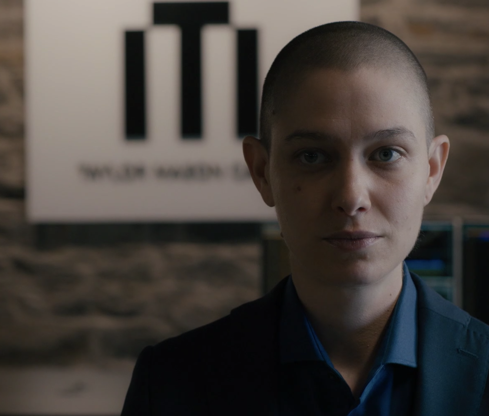

01
Taylor Mason Capital · 会面
赴公司募资前，先募自己的钱

剧情事实阿克斯与团队到达主经纪商的资本介绍活动，期待争取三百亿美元中的一大部分；泰勒发消息说还在整理事情，实际正单独向安德洛夫介绍自己的反应速度与量化技术，并把离开阿克斯比作逃出一座泄漏一氧化碳的房子。[1][2]
这一场为什么重要 · 个人解读
泰勒不再把独立停在楼下的招牌和模型，而是直接争取能让计划成立的资金。生存比喻给离开提供理由，却也遮住一个矛盾：此前被泰勒视作不稳根基的金主，如今成为自主的入口。安德洛夫听取方案与代表表示乐观，都还不是已完成出资。
因此 → 泰勒带着两套募资目的走进同一场活动。